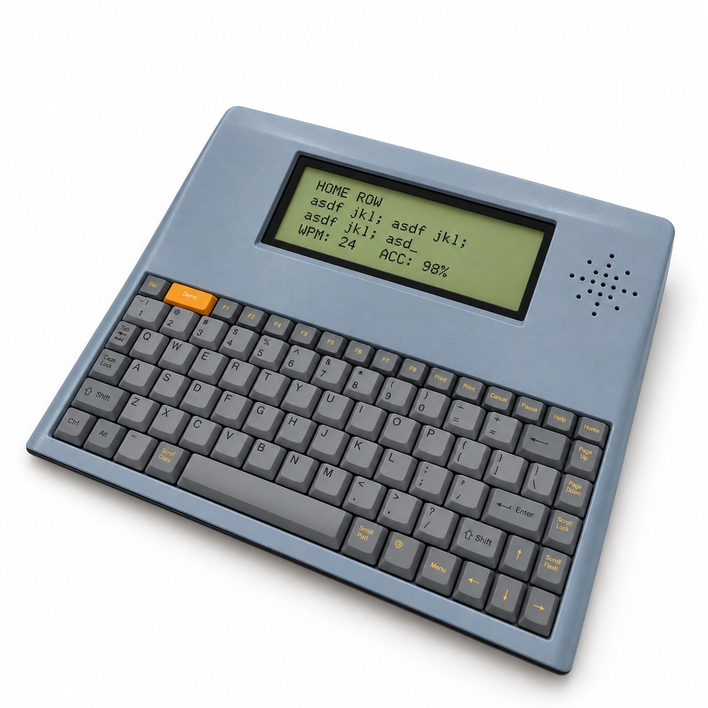

Developing the internal structure
The overall appearance concept was retained while Actech developed the internal structure, component layout and necessary minor appearance adjustments.
Project Example / Educational Hardware
Engineering and Supply Support Across Product Generations
Across successive product generations, Actech coordinated mechanical development, keypad sourcing, targeted tooling modifications and CKD component supply for final assembly in the United States.

01 / THE STARTING POINT
Successive products required mechanical development and selective tooling changes, alongside low-volume accessories and component supply.
The overall appearance concept was retained while Actech developed the internal structure, component layout and necessary minor appearance adjustments.
Changes in dimensions, appearance and functions needed to be supported while controlling tooling investment.
Low-volume charging-cradle requirements had to be addressed alongside CKD component supply for the main product.
02 / OUR RESPONSE
Actech focused on mechanical development, sourcing and accessory integration, while the customer retained responsibility for the main electronics and final assembly.
Actech developed the structure, component layout and 3D CAD, and advised on interfaces between the main PCBA and the mechanical parts during revisions.
Actech sourced a laptop-style keypad supplier and assessed where local tooling modifications could support revisions.
Actech led modular charging-cradle integration and coordinated supply of components other than the main product PCBA.
03 / PUTTING IT INTO PRACTICE
Mechanical development supported successive products, targeted tool changes and modular accessories for a component-supply delivery model.
CAD was developed from the appearance concept and component dimensions. CNC-machined plastic mockups supported appearance confirmation and marketing displays.
Injection tooling, plastic parts and the keypad were coordinated. For one revision, dimensional changes remained within the existing tool’s strength limits, allowing local modifications rather than a new tool.
Initial five- and ten-position cradles used interchangeable mold inserts for versions with or without power openings. Charging contacts and wiring modules interconnected; adjacent plastic parts clipped together, with metal base plates secured by screws.
Actech supplied housings, keypads, cables, connectors, feet, nameplates and packaging, excluding the main PCBA. The customer added the PCBA and completed final assembly in the United States.
04 / WHAT CHANGED
New-product development / product revision
Historical component supply volume
Over US$10,000: estimated tooling savings for one revision compared with a new tool.
Over US$15,000: estimated overall savings for the low-volume modular cradle requirements.
The modular cradle reduced tooling investment but increased unit cost. Savings were estimates based on the project’s low-volume requirements.
The collaboration ran approximately from 2005 to 2019. Development and revision durations describe historical experience, not delivery guarantees. Quarterly quantities refer to CKD component kits, not finished units assembled by Actech.
Mechanical revisions, selective tooling changes and component supply supported successive products and their charging cradles as customer requirements evolved.
05 / KEY TAKEAWAY
Mechanical development, selective tooling changes and modular accessories supported successive products and coordinated component supply for final assembly.